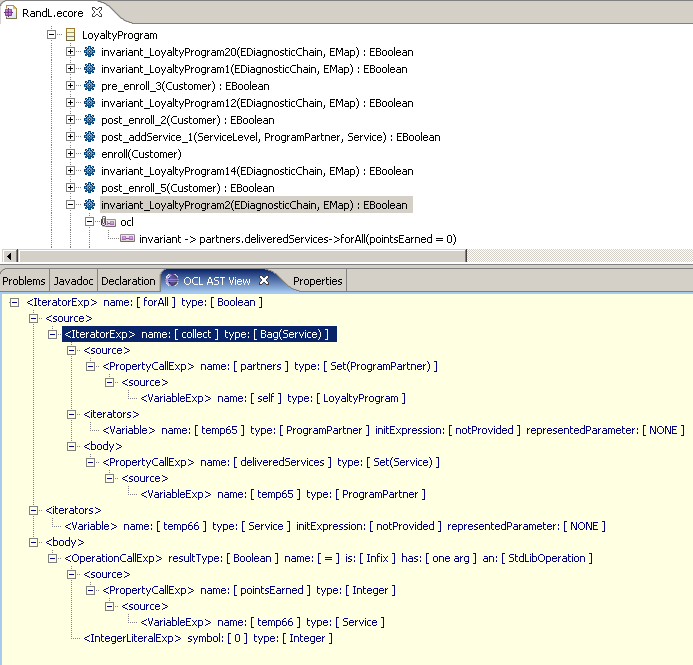
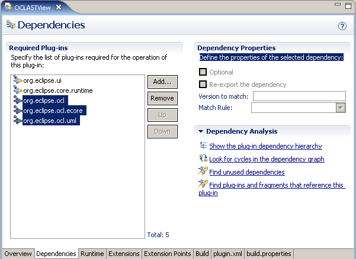

The building blocks at our disposal
The Model Development Tools Object Constraint Language (MDT OCL) framework supports all the way from parsing a textual OCL expression to evaluating such expression on some object population, for both Ecore and UML2 models. This requires some infrastructure, which MDT OCL provides as visitors for:
- validating the concrete-syntax tree (CST) prepared by the parser (such tree contains instances of OCLCST.ecore)
- resolving identifiers to declarations, i.e. transforming a CST into an abstract syntax tree (AST), whose nodes are instances of classes defined in OCL.ecore.
- evaluating an OCL AST, with org.eclipse.ocl.internal.evaluation.EvaluationVisitorImpl being in charge of this
The new org.eclipse.ocl.OCL generic class is the focal point of OCL parsing and evaluation. Besides creating org.eclipse.ocl.helper.OCLHelpers for parsing embedded constraints and org.eclipse.ocl.Querys for evaluating constraints, it can also parse OCL documents (text files external to the model).
Although this article does not focus on concrete-syntax trees prepared by the parser, two remarks are in order. First, CST classes are internal, i.e. not part of the public API of the MDT OCL plug-in. And second, the validation of a CST is actually performed by the same visitor in charge of the CST to AST conversion.
OCL expressions cannot be understood in isolation, they always appear in the context of some model element. Sample contexts include:
- a class (all OCL invariants have a class as context)
- a class property (for example, an OCL query to compute a derived attribute has that attribute as context)
- an operation (pre- and postconditions, body expressions)
- we've carefully written OCL invariants to specify which object populations should be ruled out according to the requirements (e.g. car drivers younger than 16, a PC configuration with an under-rated power supply). After code generation we may happily perform CRUD (Create, Retrieve, Update, Delete) yet the responsibility rests on the developer to check whether invariants have been broken. An efficient mechanism to collect information in the background as updates are performed would serve the purpose of flawlessly detecting invalid snapshots of object populations.
- again we've carefully written OCL queries, that we can invoke as long as all objects reside in-memory. While ORM (Object-Relational Mapping) engines contain optimizations to minimize the performance impact of retrieving objects from a persistent store, the best of both worlds could be achieved with the automatic translation of OCL into SQL or into EJB3's query language.
It could be argued that, if OCL is human-readable, why is an AST view needed at all? The answer is that it comes handy not just for those writing OCL-processing algorithms, but for everyone. Consider the following unparenthesized invariant:
currentLevel.name = 'Silver' implies card.color = Color::silver and currentLevel.name = 'Gold' implies card.color = Color::goldHow is it to be interpreted?
| Like this ... | ... or like this? |
|---|---|
(currentLevel.name = 'Silver' implies card.color = Color::silver) and (currentLevel.name = 'Gold' implies card.color = Color::gold) |
( currentLevel.name = 'Silver'
implies
(card.color = Color::silver and currentLevel.name = 'Gold')
)
implies
( self.card.color = Color::gold )
|
Software configuration for this article
This article assumes some familiarity with OCL syntax. The examples shown are part of a case study (Royal & Loyal) originally discussed in the book "The Object Constraint Language. Getting your models ready for MDA" by Warmer and Kleppe, as well as in the following course notes:
Following the tradition of other OCL tools, the Royal & Loyal case study is followed (its class diagram can be found in Appendix A). Both EMF and UML2 versions are provided . The R&L model contains samples for all OCL language constructs. We'll discuss some of them in connection with our viewer. This model can be explored with any editor that allows selecting model elements (e.g. the built-in Sample Ecore Model Editor, or some graphical editor). The contained OCL expressions can thus be modified and new ones added. You won't get feedback on syntax checks with those editors (as the OCL annotations are opaque to them). For that, installing the OCLASTView plug-in is needed.
In order to have an .uml file initialized with the contents of a pre-existing .ecore file, you may do one of the following: (a) right click on the corresponding Ecore .genmodel, select "Export Model..." and then "UML model". Alternatively, you can (b) open the Ecore model, select the EPackage you want to convert, and then from the "Sample Ecore Editor" menu (in the main menu bar) choose "Convert to UML Model ...". You will need the org.eclipse.uml2.examples plug-ins to see those menu options.
The interactive evaluation of OCL expressions against a particular object population is not the focus of this article. For that, the OCL Interpreter delivered as part of MDT OCL can be used. It accepts ad-hoc OCL expressions provided by the user at runtime, also allowing serializing them to .xmi. This document can be explored with the standard XMI editor provided by EMF, however OCLASTView has been designed to display OCL ASTs in a more readable format. A comparison can be found in Appendix B.
Visitors are our friends
The occurrences of OCL language constructs are internally represented in ASTs as instances of the OCL "metamodel" classes (depicted in Figure 2). In the AST shown in Figure 1, the root is an IteratorExp. This particular iterator (a forAll with two iterator variables) evaluates whether the boolean condition expressed in its body is true for all pairs of items in the source collection (the source collection being self.participants, whose type is OrderedSet(Customer)). As a whole, this forAll reports whether items with duplicate names exist. OCLASTView depicts iterators with the source collection as first child, the iterator variables as second child, and the boolean expression as third child (just like the appearance order in the textual syntax). More diagrams of the OCL 2.0 metamodel can be found in the latest spec by the OMG, formal/2006-05-01.
 |
MDT OCL contains great examples of visitors for OCL processing, e.g. to obtain the textual representation of an OCL AST (ToStringVisitor). These visitors can be easily spotted in that they implement interface org.eclipse.ocl.utilities.Visitor.
Let's say we've got a reference myExp to an OCLExpression
(the root interface of the OCL metamodel) most probably obtained as a
result of invoking OCLHelper#createQuery(String expression).
The OCLExpression interface extends Visitable,
therefore we can invoke myExp.accept(myVisitor) on it. Assuming
that myExp is the AST for the forAll expression in
Figure 1, and thanks to overriding, the accept() method in IteratorExpImpl
will be invoked, which in turn delegates to a handler for that language
construct in our visitor. Before getting to see the  default implementation of AbstractVisitor#visitIteratorExp(),
please notice that:
default implementation of AbstractVisitor#visitIteratorExp(),
please notice that:
- the usage of generic types in that method will be explained shortly
- an OCL iterator expression (e.g. forAll) evaluates its body for each item in the source collection. Such body refers to a variable, a variable which takes as value (in each evaluation) one of the items in the source collection. Incidentally, forAll is special in that it's the only OCL iterator expression allowing more than one variable, so as to allow Cartesian products. If you really want to know more about what an AST node for the forAll construct looks like, you may jump ahead to Figure 3, where its metamodel class is depicted.
Coming back to the source code, first for  the default implementation of AbstractVisitor#visitIteratorExp()
and then for
the default implementation of AbstractVisitor#visitIteratorExp()
and then for  its specialization in ToStringVisitor
(which overrides it to generate the textual syntax for the iterate
expression, the opposite process to parsing):
its specialization in ToStringVisitor
(which overrides it to generate the textual syntax for the iterate
expression, the opposite process to parsing):
public T visitIteratorExp(IteratorExp<C, PM> callExp) { T sourceResult = callExp.getSource().accept(this); List<T> variableResults; List<Variable<C, PM>> variables = callExp.getIterator(); if (variables.isEmpty()) { variableResults = Collections.emptyList(); } else { variableResults = new java.util.ArrayList
(variables.size()); for (Variable<C, PM> iterVar : variables) { variableResults.add(iterVar.accept(this)); } } T bodyResult = callExp.getBody().accept(this); return handleIteratorExp(callExp, sourceResult, variableResults, bodyResult); } protected T handleIteratorExp(IteratorExp<C, PM> callExp, T sourceResult, List<T> variableResults, T bodyResult) { return null; }
The above implementation performs no processing at all, it just
visits all nodes. Instead, the  override in ToStringVisitor
returns a string of the form
override in ToStringVisitor
returns a string of the form
protected String handleIteratorExp(IteratorExp<C,PM> callExp, String sourceResult, List<String> variableResults, String bodyResult) { StringBuffer result = new StringBuffer(); String name = callExp.getName(); result.append(sourceResult).append("->").append(name).append('('); //$NON-NLS-1$ for (Iterator<String> iter = variableResults.iterator(); iter.hasNext();) { result.append(iter.next()); if (iter.hasNext()) { result.append(", ");//$NON-NLS-1$ } } result.append(" | ").append(bodyResult).append(')');//$NON-NLS-1$ return result.toString(); }
ToStringVisitor needs only override handleIteratorExp() to get its job done, as visitIteratorExp() takes up the recurrent duty of visiting the owned parts, moreover passing such results (Strings in this case) as actual arguments to handleIteratorExp(). In case the default visit order established by AbstractVisitorImpl is not deemed appropriate for some particular scenario, its visit... methods can be overridden. This is necessary for example when evaluating an OCL if-then-else-endif: the else part is be evaluated only in case the condition part evaluates to false. This is precisely what EvaluationVisitorImpl#visitIfExp() does.
Generics are our friends, too
It's a fact of life that MDT OCL makes copius use of Generics. However it's a small set of type parameters that's used over and over again. With a bit of practice you'll recognize in a flash that C stands for either an EMF org.eclipse.emf.ecore.EClassifier or an UML2 org.eclipse.uml2.uml.Classifier. The complete list of type parameters is described in the Javadoc for the interface org.eclipse.ocl.Environment (reproduced below for ease of reference while reading this article). In fact, there is a method to all this, and the Type Hierarchy helps in visualizing it. Environment has two subtypes: EcoreEnvironment and UMLEnvironment, where the correct type substitutions appear for easy reference. Other types exhibiting the same pattern include org.eclipse.ocl.OCL, org.eclipse.ocl.utilities.UMLReflection, and org.eclipse.ocl.utilities.ExpressionInOCL.
The intriguing T type parameter in the code above stands for the result type of visitor methods. For example, the declaration of ToStringVisitor subclasses AbstractVisitor by substituting the generic T return type with String. In detail,
public class ToStringVisitor<C, O, P, EL, PM, S, COA, SSA, CT> extends AbstractVisitor<String, C, O, P, EL, PM, S, COA, SSA, CT>
Given that some types have specializations providing type substitutions for Ecore and for UML2, a natural question is why AbstractVisitor does not follow the same pattern. After all, one could type:
public class AbstractVisitorEcore<T>
extends AbstractVisitor<T, EClassifier, EOperation, EStructuralFeature,
EEnumLiteral, EParameter, EObject,
CallOperationAction, SendSignalAction, org.eclipse.ocl.ecore.Constraint>
(by checking what substitutions are used in EcoreEnvironment) and then let the Java Development Tools perform auto-completion given the start of a method name, for example:
@Override
protected T handleIteratorExp(IteratorExp<EClassifier, EParameter> callExp,
T sourceResult, List<T> variableResults, T bodyResult) {
// TODO Auto-generated method stub
return super.handleIteratorExp(callExp, sourceResult, variableResults,
bodyResult);
}
This move is not as smart as it might seem at first sight given that the very benefits of Generics are lost: any OCL visitor extending AbstractVisitorEcore will only work on Ecore-based models, although it could have most probably worked on UML2-based models as well. Bounded generics allow writing algorithms which minimally depend on the types of the input, while preserving static type-safety. That's the reason why EvaluationVisitorImpl, for example, has no specializations: its methods work for models expressed in either of Ecore or UML2.
org.eclipse.ocl
|
With this brief exposition to the OCL metamodel and the usage of parametric polymorphism in MDT OCL, we set out to build our first OCL visitor.
First visitor: a visualizer of OCL ASTs
A tree-based visualization of OCL expressions helps big time in familiarizing with the structure of the different kinds of nodes in OCL ASTs, and thus we will get that visitor to work first (a slightly more sophisticated visitor, a simplifier of arithmetic expressions, comes next).
We cover first the visitor itself (devoid of UI aspects), leaving for the next section the plug-in extension that defines the view to display the tree prepared by the visitor. This view mostly consists of code generated by a PDE wizard. The remaining bits and pieces (how to track the current selection in an Ecore editor, how to parse OCL, how to display an XML document in a TreeViewer) are described in detail elsewhere.
What to do in the handler for a leaf node
It makes sense to consider first what output we want for leaf nodes in OCL ASTs. These nodes are recognized because AbstractVisitor defines their handler to simply return null; no owned nodes are visited, and thus no handler... method is defined for such construct. In our case, we want our visitor to prepare an XML element to show the node kind and type. Some leaf nodes have additionally a value, e.g. all the ...LiteralExp ones: they stand for literal constants of some type. We will also display such literal constants as attributes of an XML node. In summary, leaf nodes are handled by:
public T visitVariableExp(VariableExp<C, PM> v); public T visitTypeExp(TypeExp<C> t); public T visitUnspecifiedValueExp(UnspecifiedValueExp<C> unspecExp); public T visitStateExp(StateExp<C, S> stateExp); public T visitIntegerLiteralExp(IntegerLiteralExp<C> literalExp); public T visitRealLiteralExp(RealLiteralExp<C> literalExp); public T visitStringLiteralExp(StringLiteralExp<C> literalExp); public T visitBooleanLiteralExp(BooleanLiteralExp<C> literalExp); public T visitNullLiteralExp(NullLiteralExp<C> literalExp); public T visitInvalidLiteralExp(InvalidLiteralExp<C> literalExp); public T visitEnumLiteralExp(EnumLiteralExp<C, EL> literalExp); public T visitUnlimitedNaturalLiteralExp(UnlimitedNaturalLiteralExpliteralExp)
These are the methods we'll implement first in class XMLforOCL which extends AbstractVisitor and that imports classes from the MDT OCL plug-in (the plug-ins that OCLASTView depends on are shown in Figure 11 below)
Method  visitVariableExp() in XMLforOCL
handles usages of variables in OCL. VariableExp references the
declaration of the referred variable, i.e. it references a org.eclipse.ocl.expressions.Variable<C,
PM>:
visitVariableExp() in XMLforOCL
handles usages of variables in OCL. VariableExp references the
declaration of the referred variable, i.e. it references a org.eclipse.ocl.expressions.Variable<C,
PM>:
@Override
 public Element visitVariableExp(VariableExp<C, PM> v) {
Variable<C, PM> vd = v.getReferredVariable();
Element res = new Element("VariableExp"); //$NON-NLS-1$
res.setAttribute("name", vd.getName()); //$NON-NLS-1$
addTypeInfo(res, v);
return res;
}
private void addTypeInfo(org.jdom.Element res, TypedElement<C> exp) {
C ec = exp.getType();
String tName = getName(ec);
res.setAttribute("type", tName); //$NON-NLS-1$
}
public Element visitVariableExp(VariableExp<C, PM> v) {
Variable<C, PM> vd = v.getReferredVariable();
Element res = new Element("VariableExp"); //$NON-NLS-1$
res.setAttribute("name", vd.getName()); //$NON-NLS-1$
addTypeInfo(res, v);
return res;
}
private void addTypeInfo(org.jdom.Element res, TypedElement<C> exp) {
C ec = exp.getType();
String tName = getName(ec);
res.setAttribute("type", tName); //$NON-NLS-1$
}
An OCL expression may contain literals for primitive datatypes (Real,
Integer, Boolean, String). A handler for such occurrences of literals in
an AST node typically looks like:
@Override
public Element visitRealLiteralExp(RealLiteralExp<C> literalExp) {
Element res = new Element("RealLiteralExp"); //$NON-NLS-1$
res.setAttribute("symbol", Double.toString(literalExp.getRealSymbol())); //$NON-NLS-1$
return res;
}
Two novelties of OCL 2.0 are the built-in literal values null
and OclInvalid which may appear in the textual syntax. In
general, an expression any of whose arguments is OclInvalid
evaluates to OclInvalid, that value propagates during
evaluation much like NULL does in SQL. By including an
invocation to addTypeInfo() our handlers will reveal what the
types of those literal values are (and they better have one, as OCL is a
strongly-typed language). The instances returned are maintained by MDT
OCL, they are part of the symbol tables (in
compiler-implementation terminology) and form part of the bookkeeping
required to parse, validate against static semantics, and
transform OCL expressions.
What to do in the handlers for non-leaf nodes
According to our definition, non-leaf nodes are those whose metamodel class defines one or more containment associations, as for example IfExp, IterateExp, and IteratorExp:
The XMLforOCL handler of IfExp simply pieces together the results of visiting the owned parts (just like ToStringVisitor does). These results (conditionResult, thenResult, and elseResult) are never null because according to the well-formedness rules of OCL an IfExp must have those three parts and visitors are coded under the assumption of well-formed input. Notice also that had not been org.jdom.Element substituted for the type parameter T, the visitor would have resorted to explicit type-casts (downcasts from Object to Element). Generics instead enable compile-time type-checking.
@Override protected org.jdom.Element handleIfExp(IfExpifExp, Element conditionResult, Element thenResult, Element elseResult) { Element res = new Element("IfExp"); //$NON-NLS-1$ Element eConditionPart = new Element("condition"); //$NON-NLS-1$ eConditionPart.addContent(conditionResult); res.addContent(eConditionPart); Element eThenPart = new Element("then"); //$NON-NLS-1$ eThenPart.addContent(thenResult); res.addContent(eThenPart); Element eElsePart = new Element("else"); //$NON-NLS-1$ eElsePart.addContent(elseResult); res.addContent(eElsePart); return res; }
What sets CallExp and its subtypes apart from the rest
We've written handlers returning org.jdom.Element for several OCL constructs by considering them in isolation, without worrying about other sub-expressions in the whole OCL expression. This we can make for IfExp, the ...LiteralExp, and in general for metamodel classes which are not subtypes of CallExp, as a CallExp further evaluates some source expression which can be obtained with getSource(). For example, the metamodel in Figure 2 shows that a PropertyCallExp is a subtype of CallExp. That explains why we can write: self.age >= 18, where age stands for an attribute. (The VariableExp self is its source expression). What EMF calls EStructuralFeature (an attribute or a reference) OCL calls property, also in agreement with UML terminology.
In terms of OCL visitors this means that for each instance of CallExp
its source expression should be visited, and the visit...
methods in AbstractVisitor do just that. This behavior was
already shown in  and
and  , the default AST
visitor and the serializer into textual representation, respectively.
The root node in Figure 1 has <source> as a subnode only
because in our overridden handleIteratorExp the following was
done:
, the default AST
visitor and the serializer into textual representation, respectively.
The root node in Figure 1 has <source> as a subnode only
because in our overridden handleIteratorExp the following was
done:
Element sourceE = new Element("source");
sourceE.addContent(sourceResult);
res.addContent(sourceE);
Other OCL constructs owning sub-expressions occur in connection with the initializers of variables and the arguments of operation calls. As a sidenote, in programming-language parlance, OCL's "source" is usually called "target", while in OCL MessageExps the target is actually named "target".
Things we swept under the carpet
We've overridden so far the methods highlighted in Figure 4. The remaining ones follow the same principles and can be found in the finished XMLforOCL.
Exploring the list of not-yet-implemented methods reveals a type that cannot be found in the fragment of the OCL metamodel depicted in Figure 2 (TupleLiteralPart). Implementing another method (visitCollectionLiteralExp()) reveals a containment association to types also not shown in Figure 2 (CollectionItem and CollectionRange, taken together the only subtypes of CollectionLiteralPart, also not shown in Figure 2). Finally, we've implemented a handler (visitVariable()) for a type nowhere to be found in Figure 2. What's going on? As Figure 5 shows, not all OCL constructs have counterparts subtyping OCLExpression in the metamodel (Figure 2 depicts only the classes branching off from OCLExpression).
| XMLforOCL visitor so far "> Figure 4 Public methods overridden in XMLforOCL so far |
Figure 5 The whole story about the OCL metamodel: not all OCL language constructs subtype OCLExpression |
To complete the picture on visiting Variables, version 1.1 of MDT OCL introduces the ExpressionInOcl metaclass (described in Chapter 12 of the OCL spec). This metaclass does not subtype TypedElement but Visitable and constitutes the container for context variables (self, result) and for those variables standing for operation parameters (if any). As for other OCL constructs, AbstractVisitor#visitExpressionInOCL() will visit those owned parts, passings the results to AbstractVisitor#handleExpressionInOCL().
Variables and environments: how they show up in OCL ASTs
Navigation in OCL expressions as enabled by CallExp is very useful. Some constructs however must serve as anchors, i.e. they have no source expression themselves. We've met some of them already: all the ...LiteralExp ones, VariableExp, IfExp, and LetExp. The remaining constructs without a source share the property of being subtypes of OCLExpression but not of CallExp: TypeExp, UnspecifiedValueExp, StateExp, and MessageExp.
There's a distinction between VariableExp and Variable, the former denotes a usage and the latter a declaration. The declaration for a usage is accessible through VariableExp#getReferredVariable(). The AST builder in MDT OCL makes available as pre-defined some variables in some OCL expression contexts:
- self in classifier and operation contexts
- a variable for each formal argument in an operation context
- result in the postcondition context of an operation.
- Additionally, @pre may postfix in the postcondition context a property, to indicate the value it had before execution of the operation. More in detail, the FeatureCallExp metaclass defines the isMarkedPre property. Unfortunately, Section 8.3.2 "FeatureCall Expressions" of the OCL spec omits the description of the FeatureCallExp metamodel class. More importantly, a VariableExp cannot be marked with @pre because variables (such as operation parameters or Let variables) don't exist before the invocation of the operation (thanks to Christian W. Damus for these observations).
The constructs let, all the iterators (IteratorExp) and iterate (IterateExp) allow defining (sometimes implicit) variables. For example, Figure 1 shows the forAll iterator defining two explicit variables (c1, c2). Implicit iterator variables instead are nowhere to be seen in the textual syntax, thus contributing to its conciseness, but are revealed by the AST builder anyway. For example, Figure 6 depicts the invariant
participants->forAll(age() <= 70)
where both self and the iterator variable over the participants collection are implicit. In the AST tree view the explicit declaration of the iterator variable (temp20) is shown in red, and its usage in green (Figure 6).
Moreover, the OCL syntax allows for a collect iterator to be elided from the textual syntax, to support the intuitive concept of "dot navigation". This feature can be seen at work in Figure 7.
|  |
With some more work, the OCL AST visualizer can be extended to show the variables available in the current environment of a sub-expression.
The following section covers GUI issues, setting the ground for covering later our last visitor, a simplifier of arithmetic expressions.
The UI for OCL visitors
We'll use the same UI mechanisms for all the visitors in this article: a TreeViewer to display an XML document. The only differences will be in the document to build and how it's built. As first step, we activate the wizard File > New > Plug-in Project, and make the choices shown in Figures 8 to 10.
In the just created plugin.xml the dependencies shown in Figure 11 are added:
|  |
Making OCLASTView track the current editor selection
In its current state, the view generated by the wizard can be shown alongside the Ecore or UML editor we've chosen yet it is unaware about the current selection. We want it instead to display the XML tree so laboriously built for an OCL-annotated operation or classifier. Some classes cherry-picked from other plug-ins save the day (they've been placed in the util package in the source code of OCLASTView):
- JDomContentProvider and JDomLabelProvider, reproduced from the BSD-licensed Octopus
Finally, we make the view implement ISelectionListener with selectionChanged() checking whether a valid context has been selected (an operation or a classifier, to later check whether that context has a valid OCL annotation. At the XMI level, an OCL annotation looks as shown in Figure 12:
Using the Sample Ecore editor the same OCL invariant looks as shown in Figure 13:
Go ahead and click operations at will, the OCLASTView will get notified and will update the view as a result of parsing the string containing the OCL expression and visiting it (debug for increased thrill)
private Element displayOCL(String expression, EObject context, String key) {
org.eclipse.ocl.OCL ocl = null;
org.eclipse.ocl.helper.OCLHelper helper = null;
Element res = new Element(key);
res.setAttribute("textualInput", expression);
if (context instanceof org.eclipse.uml2.uml.NamedElement) {
ocl = org.eclipse.ocl.uml.OCL.newInstance();
} else {
ocl = org.eclipse.ocl.ecore.OCL.newInstance();
}
helper = ocl.createOCLHelper();
// set our helper's context object to parse against it
if ((context instanceof org.eclipse.emf.ecore.EClass)
|| (context instanceof org.eclipse.uml2.uml.Classifier)) {
helper.setContext(context);
} else if (context instanceof org.eclipse.emf.ecore.EOperation) {
EOperation eOp = (EOperation) context;
helper.setOperationContext(eOp.getEContainingClass(), eOp);
} else if (context instanceof org.eclipse.uml2.uml.Operation) {
org.eclipse.uml2.uml.Operation op = (org.eclipse.uml2.uml.Operation) context;
helper.setOperationContext(op.getOwner(), op);
} else if (context instanceof org.eclipse.emf.ecore.EStructuralFeature) {
EStructuralFeature sf = (EStructuralFeature) context;
helper.setAttributeContext(sf.getEContainingClass(), sf);
} else if (context instanceof org.eclipse.uml2.uml.Property) {
org.eclipse.uml2.uml.Property p = (org.eclipse.uml2.uml.Property) context;
helper.setAttributeContext(p.getOwner(), p);
}
OCLExpression<EClassifier> oclExp = null;
Element xmlAST = null;
try {
oclExp = helper.createQuery(expression);
} catch (Exception e) {
xmlAST = reportException(e);
res.addContent(xmlAST);
return res;
}
XMLforOCL xfo = null;
if (context instanceof org.eclipse.uml2.uml.NamedElement) {
xfo = XMLforOCL.getUML2Version();
} else {
xfo = XMLforOCL.getEcoreVersion();
}
try {
 xmlAST = (Element) oclExp.accept(xfo);
} catch (Exception e) {
xmlAST = reportException(e);
}
res.addContent(xmlAST);
return res;
}
xmlAST = (Element) oclExp.accept(xfo);
} catch (Exception e) {
xmlAST = reportException(e);
}
res.addContent(xmlAST);
return res;
}
Using OCLASTView with Ecore editors
Just to show that it's possible, the figure below depicts the example Ecore editor provided by GMF triggering an update of OCLASTView:
Emfatic can also be used to edit an OCL-annotated Ecore model, yet its Outline view does not provide an EOperation selection. Emfatic makes however for quick editing of OCL expressions themselves, as depicted in Figure 15. Additionally, a new version of Emfatic is being developed. For details check this document. The new features include: syntax to account for EMF Generics, folding, hovers displaying the declaration of the element under the cursor, hyperlinks, AutoEdits, templates, and Type Hierarchy, among others.
Using OCLASTView with UML editors
UML2 Tools consists of a set of GMF-based editors for viewing and editing UML models. A diagram similar to that shown in Figure 16 can be obtained by right-clicking on the UML version of Royal & Loyal and choosing "Initialize umlclass_diagram".OCLASTView also works with the built-in UML Model Editor, as shown below:
Second visitor: simplification of arithmetic expressions involving literal constants only
Whether an OCL expression is interpreted or compiled, one way to make OCL evaluation faster consists in computing at compile-time as much as possible of the expression, as a result of analyses such as constant folding or strength reduction or common sub-expression elimination or partial redundancy elimination (compiler-implementation terminology, for an overview see Max Hailperin's course notes) or partial evaluation (functional programming terminology). We will tap into this area by showcasing a visitor to clone an input OCL expression, except that arithmetic sub-expressions involving only literal constants will be reduced to their final result.
This is actually the first example involving processing, in this case transformation, of an OCL expression. So far we've just relied on the AST builder to resolve identifiers to declarations and in general provide us with well-formed ASTs. As we output an updated AST thanks to an algorithm of our invention, we have to make sure that we in turn play by the rules and return a valid AST.
Moreover, it would be nice if we documented the set of OCL expressions that our algorithm has been designed to handle (it's all right to write a visitor that covers only a subset of OCL, as long as that visitor reports whether it can cope with the input or not).
The sketched reduction is not the only possible one, logical operations can be simplified according to de Morgan rules, and so on. In such visitors one wants to return unmodified AST nodes most of the time . In the arithmetic reduction case, a modified AST is returned only from the handler for OperationCallExp in case both the source expression and the argument are any of RealLiteralExp or IntegerLiteralExp. In the resulting OCL expression, the CallExp (if any) that was referencing the old (unmodified) source expression should be changed to point to the freshly instantiated AST node. The behavior we saw in AbstractVisitor for subtypes of CallExp (visiting the source, visiting the contained nodes, doing processing, return) hints at how to implement this.
It would be cumbersome to duplicate over and over that strategy whenever a "reducer" visitor is written. Instead, we'll code OCLCloner to provide such behavior by default. A new visitor need only override those methods where it may detect an opportunity for applying a reduction, invoking the non-overridden version in case the preconditions for the reduction are not fulfilled. For example, method visitOperationCallExp() in OCLArithSimplifier starts as follows:
@Override
protected Visitable handleOperationCallExp(
OperationCallExp<C, O> callExp, Visitable sourceResult,
List<Visitable> argumentResults) {
int opcode = callExp.getOperationCode();
if (!isArithmeticOp(callExp)) {
return super.handleOperationCallExp(callExp, sourceResult, argumentResults);
}
OCLExpression<C> newSource = (OCLExpression<C>) sourceResult;
OCLExpression<C> newArg = (OCLExpression<C>) argumentResults.get(0);
if (!(newSource instanceof NumericLiteralExp)
|| !(newArg instanceof NumericLiteralExp)) {
return super.handleOperationCallExp(callExp, sourceResult, argumentResults);
}
/*
* actual reduction comes here
*/
You can plug OCLArithSimplifier into OCLASTView#displayOCL() to display as XML the reduced AST. Just let oclExp in OCLASTView#displayOCL() accept an instance of this visitor, right before
XMLforOCL xfo = null; OCLArithSimplifier simplifier = null; if (context instanceof org.eclipse.uml2.uml.NamedElement) { xfo = XMLforOCL.getUML2Version(); simplifier = OCLArithSimplifier.getUML2Version(); } else { xfo = XMLforOCL.getEcoreVersion(); simplifier = OCLArithSimplifier.getEcoreVersion(); } try { oclExp = (OCLExpression) oclExp.accept(simplifier);
Conclusion
In spite of having been around for some years now, the best times for OCL are yet to come by leveraging model compilers to map declarative specifications into the chosen target software architecture. Some projects and prototypes in this field are mentioned for further exploration:
- The definition of domain-specific languages goes beyond a grammar specification and includes so-called well-formedness rules to validate ASTs of sentences in that language. OCL has proven successful as a means to specify those rules. Having language metamodels with OCL enables building better tooling for such domain-specific languages. Examples of machine-checked metamodels include a metamodel for BPEL 1.1 by Dave Akehurst and a metamodel for EJB3QL (also called JPQL) by this author.
- The phrase GUI generation is commonly equated to mean CRUD (Create-Retrieve-Update-Delete). The problem with generators of CRUD GUIs is that the only model-level information they have at their disposal is the class model without OCL. OCL-aware generation of GUIs instead results in warnings at runtime after performing updates that break invariants, and in graying-out actions whose preconditions are not fulfilled. Even without modeling behavior (in this case, user tasks) in the input models, taking OCL into account in code generation contributes to both the productivity and the quality of the software development process.
- More ideas on simplification of OCL (sometimes for improved readability, need not always be for performance!) can be found in this paper and in this other paper. An OCL tool aiming at supporting the refactoring of OCL expressions is RoclET.
- So far rule engines have been reluctant to adopt OCL as notation for specifying the activation condition that triggers the action part of a reactive rule. We see no major technical difficulty in replacing this proprietary portion of rule languages with standard OCL.
- Detecting broken invariants and detecting when an activation condition should trigger are particular cases of the incremental update of materialized views, a topic of interest in all data models. The most efficient algorithms to detect these situations have been designed for relational DBMSs. Work in this area for OCL includes the PhD thesis by Jordi Cabot, and a master thesis on using AspectJ to instrument OCL contracts at runtime (by James Dzidek).
The examples above are just a glimpse of on-going work involving processing of Abstract Syntax Trees of OCL (in particular) and of software models in general. The availability of OCL infrastructure as provided by MDT OCL, together with contributions from the community, is a step forward towards the widespread availability of reliable, standards-based model-compiler technology. The building blocks for this promising area are also at your disposal.
Appendix A: Class model of Royal & Loyal
The class model of the Royal & Loyal case study is shown for reference purposes below:
Appendix B: Comparison with XMI Tree Visualization
OCL ASTs can be serialized to .xmi format from the OCL Interpreter console and then visualized with the EMF-provided XMI editor. In detail:
- type an OCL expression in the OCL Interpreter console
- save it (Save last evaluated expression to an XMI file on the toolbar view)
- bring that file to the workspace
- open it with the Sample Reflective Ecore Model Editor
For the invariant shown in Figure 1, the result of the above looks as follows (Figure 19):
A comparison with Figure 1 shows that:
- information about typing for the expression elements can be found only in the Properties view, thus forcing to navigate between two screen locations
- the role played by each sub-expression (be it an argument, a source expression, a new variable that will be visible in sub-scopes) is not clear from the XMI editor. Instead, OCLASTView shows nodes labelled with this OCL-specific information
- OCLASTView can be easily extended to depict additional information (e.g. which variables constitute the current scope at different AST nodes). To reconstruct this information with an XMI viewer, a cumbersome parsing of XML elements would be necessary (cumbersome because the symbol tables prepared by the OCL parser are not available anymore, and thus have to be in effect reconstructed)
Specially the last item sums up the differences between both data structures.
References
- MDT OCL: OCL SDK Download (includes on-line Developer Guide and Interactive OCL Console example)
- OCL 2.0: Specification
- UML2 : an EMF-based implementation of the UMLTM 2.x metamodel for the Eclipse platform.
- UML2 Tools : a set of GMF-based editors for viewing and editing UML models.
- Christian W. Damus shows in his article Implementing Model Integrity in EMF with MDT OCL how to have Java method bodies generated from OCL constraints (invariants, derived properties and derived operations) specified in an Ecore-based model.
- Ed Merks and Marcelo Paternostro explain in the EclipseCon 2007 talk Modeling Generics with Ecore the changes in Ecore that allow it to model a generic type system.
Acknowledgements
The visitor for simplifying arithmetic expressions presented here is based on work by Veronica Tedjasukmana (for another OCL tool) on a family of visitors that cover a larger set of simplification rules, for both arithmetic and boolean operations.
Source Code
For running this plug-in, just copy the provided .jar of the OCLASTView plug-in into your <ECLIPSE_INSTALL>/plugins folder, and restart Eclipse (with eclipse.exe -clean to be really sure that the just added plug-in will be picked-up in the product configuration).
MDT OCL 1.1 is required. Depending on whether you'll want to edit Ecore or UML models you'll also need EMF 2.3 or UML2 2.x.
Source code is provided in the plug-in itself. After the plug-in has been installed, the source code can be imported into the workspace as an Eclipse project with File > Import > Plug-ins and Fragments > Projects with source folders > OCLASTView.
If you want to take a look at the source code before actually installing the plug-in, unpack the plug-in jar and take a look inside the src folder.